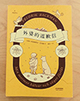

| 书名 | 作者 | 简介 | 语录 |
| 《云边有个小卖部》 | 张嘉佳 其他作品：《摆渡人》、《从你的全世界路过》等 |
云边镇的刘十三从小与外婆王莺莺相依为命，为了离开小镇努力学习，去大城市追寻梦想和远方，结果在城市被撞得遍体鳞伤。
回到小镇后，与儿时玩伴程霜重逢。一个孤儿、一场婚礼、一个意外，一个不可能完成的任务，几乎打破了十三和小镇居民的平静生活。十三拼尽全力在生活，却没发现生命中最重要的人正慢慢离自己而去。 |
|
| 《外婆的道歉信》 | 弗雷德里克·巴克曼 【瑞典】 其他作品：《一个叫欧维的男人决定去死》等 |
七岁的爱莎有个古怪又疯狂的外婆，在阳台上用彩弹枪射击推销员等等，基本上想干什么就干什么。这个四处惹麻烦的外婆却是爱莎仅有的朋友，也是她心中的超级英雄。不管什么情况下，外婆都会站在爱莎这一边，为了她去跟全世界拼命。
就算是超级英雄，也有失去超能力的一天。外婆不幸得了癌症去世，留给爱莎一项艰巨的任务——将外婆的道歉信送给她得罪过的九个邻居。 |
|
| 《月亮与六便士》 | 威廉· 萨默赛特·毛姆 【英国】 其他作品：《人生的枷锁》等 |
思特里克兰德是个在伦敦做事的证券经纪人，他有一个富裕和美满的家庭：妻子漂亮，爱慕虚荣，两个孩子健康快乐。按理说，他应该满足于这种人世的快乐才对，尽管这种生活未免庸俗和平静。
但是，就在他们婚后的第17个年头，他突然离家去了巴黎，抛弃了在外人看来很好的事业和家庭。就在人们以为他的出走是因为有外遇的时候，人们发现的事实却是：他原来只是为了画画。 |
|